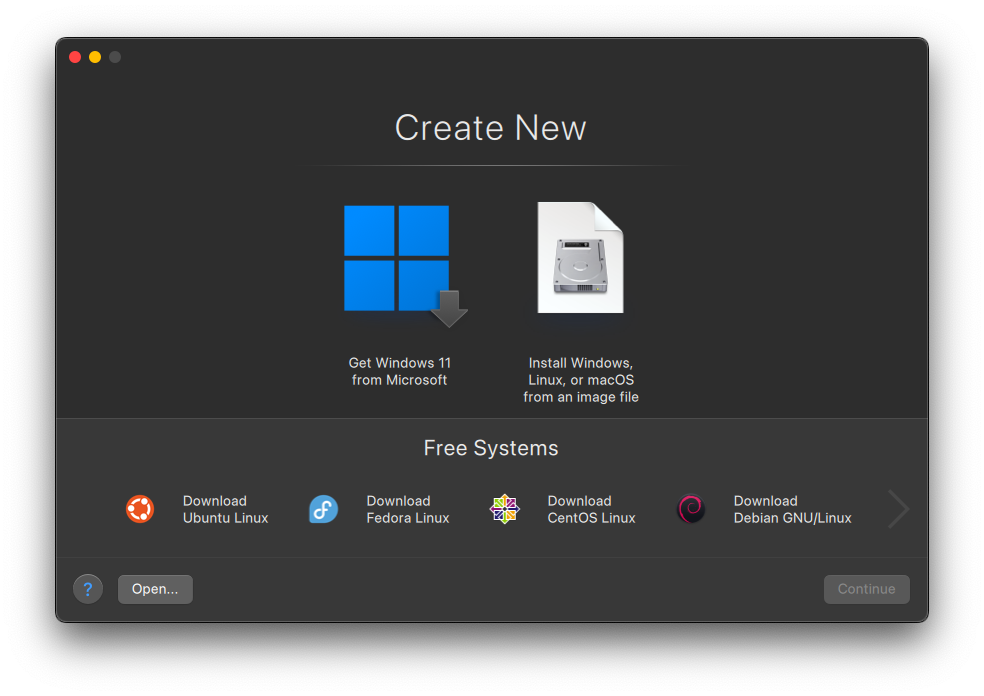
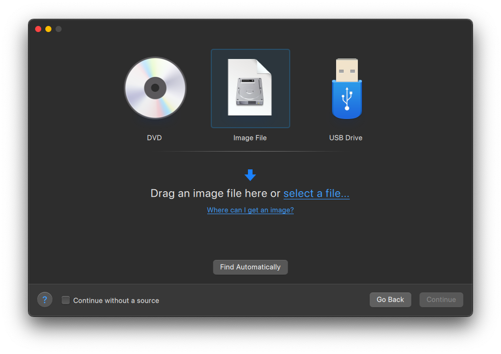
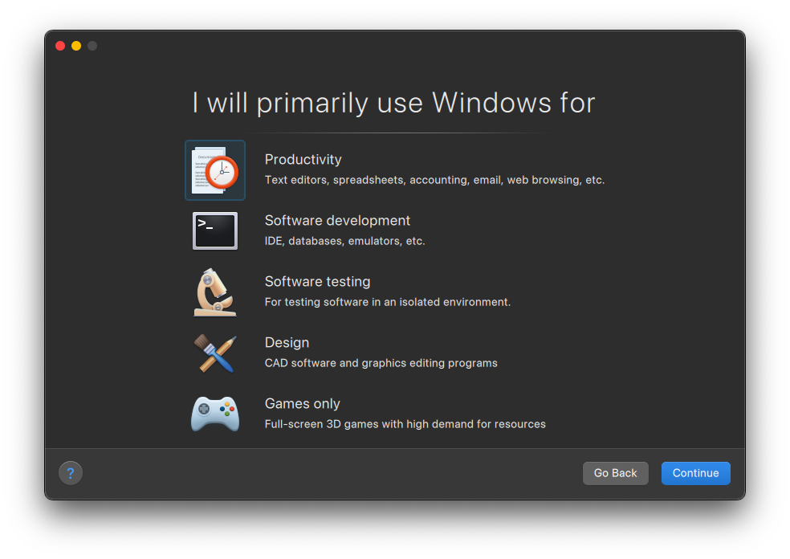
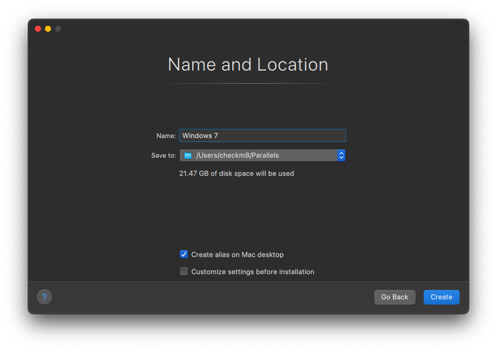

Parallels Desktop
Parallels Desktop is a commercial Virtual Machine software, developed by Parallels Inc. It is the best VM software for macOS, as it has many features and is very easy to use.
Price: $99.99/year (with a free trial)
Avaible Platforms:

How to make VM
First click on the "+" button in the top left corner

Here you can choose the OS you want to install, or you can choose "Install Windows or another OS from a DVD or image file" to install a custom OS

Here you can choose the installation method, you can choose "Express Installation" to automatically configure the OS installation, or you can choose "Custom Installation" to manually configure the OS installation

Here choose whatever you want

Finally the VM Name and path